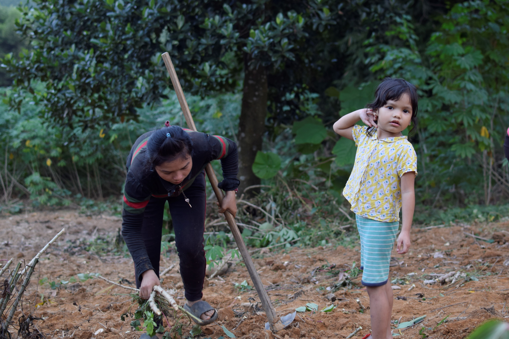
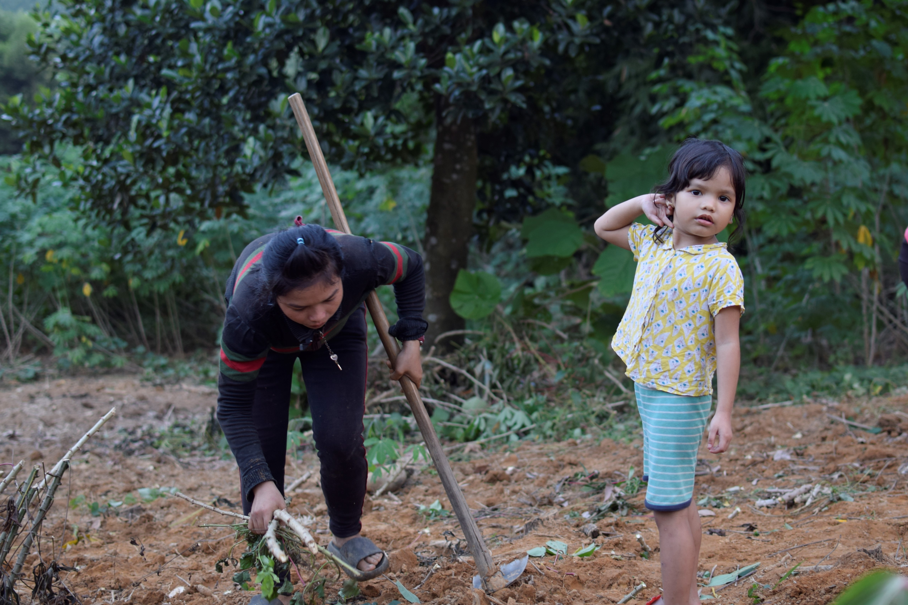
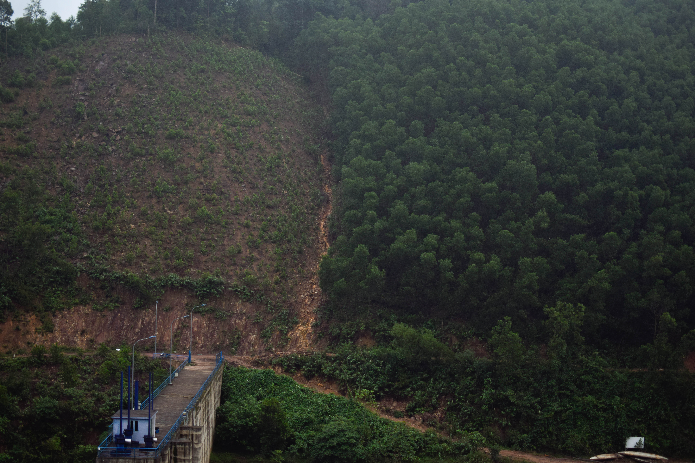

♥Future Rising Fellowship♥
Nam Đông - Huế
Mặt trời hôm nay dịu nhẹ hơn thường lệ, âu cũng vì cơn mưa đầu thu ban sáng. Thu rảo bước chân nhanh hơn dù gánh củi trên vai vun đầy. Chị dâu của em đi trước, đôi bàn chân băng suối đều đặn trước khi trời sập tối. Vòng xoáy nước chợt mạnh hơn lúc đầu giờ, nhịp điệu dồn dập dần, Thu phóng mắt nhìn xa, đoán định xem điều gì bất thường đang xảy ra. Chị dâu em quay sang:”Thủy điện xả nước, đi nhanh kẻo nguy hiểm.” Không lâu sau, nước đã cao lên trên cả gối, rồi dần lại cao hơn nữa, mấy chốc đã lên đến ngang hông. Thu lo lắng, dù đã từng băng suối khi thủy điện xả nước bất ngờ. Bước chân hai chị em vội vã hơn, chẳng tránh được việc vấp phải đá nhọn dưới nước.

Tối đến, dưới ánh đèn nhỏ trong gian bếp nhà chị gái, Thu kể lại lần đi gánh củi lúc chiều mà lòng vẫn bần thần. Bên cạnh em, chị chồng Thu đang dặm thêm một ít thuốc chống ăn chân, tuýp thuốc không thể thiếu được trong nhà phụ nữ thôn Dỗi, đặc biệt là trong những ngày mưa gió, phải ngâm chân dưới nước lâu. Việc đi lội suối bắt cá lấy củi là chuyện quá quen thuộc với phụ nữ Cơ Tu ở Thôn Dỗi. Những gánh củi đỡ đần được phần nào tiền chất đốt, một khoản chi chiếm phần lớn chi phí sinh hoạt trong gia đình. 3-4 tiếng cật lực thu nhặt đảm bảo được hơn một tháng dùng nhiên liệu. Thu nhập từ nương rẫy không còn đều đặn như trước nên giảm đi bất cứ một khoản chi nào đều là cần thiết. Tuy nhiên, đất đai sạt lở trên những đỉnh đồi, nước dâng cao lúc thủy điện xả lũ hay nhiều cơn mưa bất chợt ở Nam Đông khiến công việc này dần trở nên khó khăn hơn.
Từ ngày về làm dâu ở thôn Dỗi (Nam Đông), Thu thường hay đi cùng các chị gánh củi vào những buổi chiều, lúc có chồng phụ chăm con hoặc con cái gửi ở trường. Ban sáng, em dành thời gian để làm công việc nội trợ trong gia đình. Đôi ngày trong tuần, Thu cũng lên rẫy keo và cao su của mình để chăm sóc. Tuy đã lập gia đình và làm mẹ, nhưng Thu vẫn thuộc lứa phụ nữ nhỏ tuổi trong thôn. Các hoạt động kinh tế, nương rẫy vẫn nhận được sự đỡ đần từ các chị em xung quanh.


Cưới chồng năm 18 tuổi, Thu chuyển về thôn Dỗi ở cùng gia đình chồng. Ở lứa tuổi của em lúc ấy, hầu hết các bạn đều lựa chọn lên thành phố kiếm việc làm hoặc làm nhân công ở các xưởng may gần nhà. Gần như bạn bè em đều chọn đi làm để kiếm vốn làm ăn rồi mới trở về làm nông, đơn giản vì nguồn lợi từ việc là nương rẫy không còn đều đặn như thế hệ trước. Ở Nam Đông, nhiều trẻ em gái bỏ học đi làm khi chưa đủ tuổi lao động. Díp, chị dâu của Thu, người luôn hỗ trợ Thu lúc mới về thôn là câu chuyện điển hình. Díp trốn gia đình đi làm từ những năm 15 tuổi, theo lời bạn bè giới thiệu về một công việc lương cao dưới thành phố. Mấy năm sau, cô trở về với chút vốn ít ỏi trong tay, cùng lời thề sẽ chẳng quay lại công việc cực khổ nơi thành phố và bám trụ lại đến cùng với nương rẫy điêu tàn nơi quê nhà. Khác với Díp, để ngăn Thu theo bạn đi làm xa, bố mẹ em đã gửi em đi học ở trường nội trú dưới huyện. Giờ đây, khi em đã là mẹ của một bé gái 4 tuổi, là người vợ trẻ của một gia đình neo người, việc đi làm xa ở thành phố càng không phải là dự định của em dù đồng lương kiếm được cao gấp nhiều lần thu nhập không ổn định ở quê.
 
Ngược lại, nỗi bận tâm của em gói ghém trong những bữa ăn hàng ngày, trong rẫy keo mới đổ gãy vì cơn bão đi qua, hay trong nguồn thu nhập bấp bênh từ trồng trọt. Đợt keo trồng năm 2020 của gia đình em đều bị đổ gãy hết, cao su cũng không thu hoạch được vào mùa mưa gió, nên nguồn thu chính chỉ còn phụ thuộc vào công việc tự do của chồng, hay một ít củ mì trồng sau nhà. Díp, chị dâu của Thu và nhiều phụ nữ trong thôn cũng lâm vào tình cảnh tương tự. Keo trồng 5 năm có thể thu lãi 20 - 30 triệu đồng với vài sào đất. Do ảnh hưởng của các trận bão lớn và sạt lở đất bất chợt, thu nhập của họ dường như bằng không vào năm 2020. Sạt lở và tần suất bão lớn càng tăng cũng ảnh hưởng đến các loại cây trồng khác trong khu vực như cao su, mì, bắp, lúa. Song song với đó, áp lực từ đại dịch cũng khiến gánh nặng kinh tế gia đình khó khăn. Vào trời mưa, công việc có nguồn thu nhập ổn định nhất là cạo mủ cao su, tầm 300k/ ngày cũng bị cản trở. Chút ít thu nhập hiếm hoi từ trồng bắp hay khoai mì thường không đủ cho việc sinh hoạt gia đình hằng ngày. Vì thế, tìm kiếm một chân việc ở nhà máy với đồng lương ổn định thường là sự lựa chọn dễ dàng hơn đối với những người phụ nữ trẻ như Thu, như Díp.


Sự biến chuyển bất ngờ mà khí hậu diễn ra ở Nam Đông không chỉ đặt ra những thách thức về thu nhập với Thu, mà hơn cả còn là sự an toàn của người dân trong thôn. Đường trơn trượt, hay sạt lở khiến những ngày đi làm rẫy với chị em ở thôn Dỗi ngày càng khó khăn. Những lần đi lấy củi vất vả hơn, khi nước từ thủy điện xả xuống đột ngột, hoặc chị em dễ bị kẹt lại ở rừng lúc gặp mưa lớn, nước dâng cao. Thu còn nhiều nỗi lo hơn khi em đã là một người mẹ của cô con gái 4 tuổi, và là đồng trụ cột của gia đình nhỏ. Cứ đến mùa lũ lụt, em lại lo sợ mảnh đất sát bờ sông sau nhà sạt lở, không chỉ mất trắng thửa khoai mì trồng dở, mà còn nguy hiểm đến tính mạng của các thành viên trong gia đình. Hay những đêm bão to, vì nhà dễ bị tốc mái và dột, em phải cùng chồng gói ghém chút đồ đạc, chạy qua căn nhà vững chắc hơn của chị chồng em phía bên kia đường. Sau bão, cả gia đình mới dám về nhà.


Người dân ở Nam Đông quê Thu, huyện miền núi của tỉnh Thừa Thiên Huế không còn lạ gì với thiên tai. Đây là địa bàn thường xuyên chịu thảm họa thiên nhiên từ hạn hán đến bão. Khí hậu đặc trưng nhiệt đới gió mùa với lượng mưa lớn kết hợp với địa hình dốc dễ gây ra lũ quét và trượt lở đất nghiêm trọng. Lớp phủ thực vật ở đây bị tàn phá theo thời gian nên khả năng thấm nước ở một số nơi rất thấp càng khiến tình trạng trên báo động.
Bên cạnh vị trí địa lý nhạy cảm, các hoạt động kinh tế - xã hội của cư dân cũng tác động đến việc thay đổi điều kiện tự nhiên, làm cho thảm họa như trượt lở được kích hoạt và mạnh lên ở một số khu vực. Các công trình thủy lợi vừa và nhỏ trên địa bàn huyện, như Khe Lá (Thượng Lộ), Ga Hồn (Thượng Long)… bị xuống cấp nên việc tích và cấp nước vào mùa khô gặp nhiều hạn chế. Ảnh hưởng đáng kể nhất phải kể đến nạn phá rừng đầu nguồn, các hoạt động kinh tế như làm đường, xây dựng hồ, đập dâng, khai thác khoáng sản, vật liệu xây dựng. Hoạt động sản xuất nông lâm ngư nghiệp và công nghiệp ngày càng gia tăng, kéo theo việc mở rộng diện tích đất canh tác. Từ đó, những mảng đất trống đồi trọc tăng dễ dẫn đến gia tăng lũ quét, trượt lở đất vào mùa mưa và hạn hán vào mùa khô; Bên cạnh đó, các loại đất sử dụng cho mục đích khác dần bị bạc màu, xói mòn và ô nhiễm.


Thu từng tham gia những buổi chia sẻ về biến đổi khí hậu do địa phương tổ chức. Em nhận diện rõ nét những chuyển biến khó lường ở thời tiết nơi em sinh ra, cảm nhận được nó dần trở nên khắc nghiệt hơn. Nhưng có lẽ, chẳng dễ gì để em nhìn khí hậu ở một bức tranh rộng hơn, trong mối tương quan với cuộc sống của con gái em, của gia đình em và cả chính em ở thì tương lai. Bức tranh đó liệu có thể trả lời cho câu hỏi liệu nếu tần suất về những cơn bão càng gia tăng, thì nguồn thu nhập từ nông nghiệp vốn đã ít ỏi sẽ còn lại gì? Hay nếu em bỏ rẫy đi làm ăn xa, thì ai sẽ san sẻ cùng mối quan tâm về con cái hay gia đình?


Nỗi lo về tương lai của Thu nằm ở thế hệ tiếp theo, của con gái em. Thu, Díp, hay những người phụ nữ trẻ ở thôn Dỗi đã tiếp thu kỹ năng trồng trọt và chăn nuôi từ thế hệ bà em, mẹ em, chị em, rồi học hỏi thêm từ những người phụ nữ trong cộng đồng. Nhưng hiếm ai muốn con em họ tiếp nối công việc này, với sự bấp bênh mà chính họ đang đi qua. Thu cũng không tránh khỏi vòng xoáy đó. Việc đi làm ở những nhà máy với điều kiện làm việc kém đã là nỗi ám ảnh mà Díp, chị chồng em và nhiều bạn bè khác từng trải qua, và em cũng không muốn đi lại vết xe đổ. Nhưng nương rẫy và công việc đồng áng khác cũng không phải là niềm hy vọng mà em trao gửi hết bởi những tác động khó lường từ mẹ thiên nhiên.